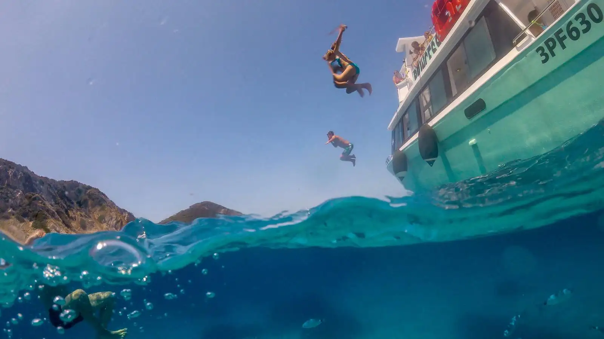
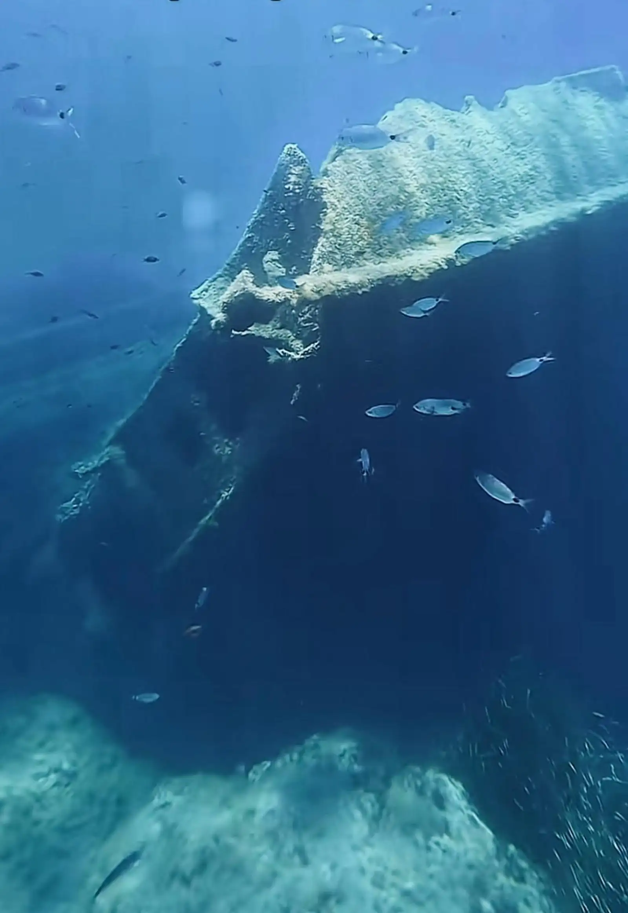
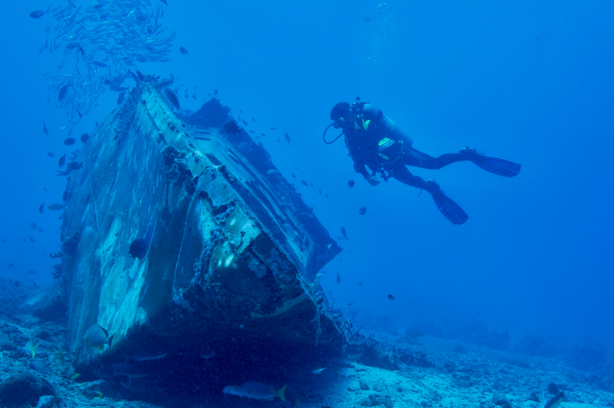
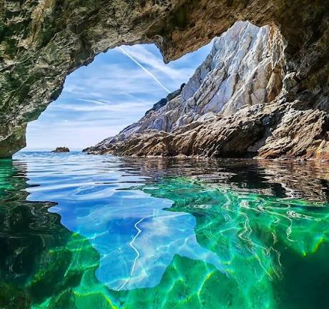
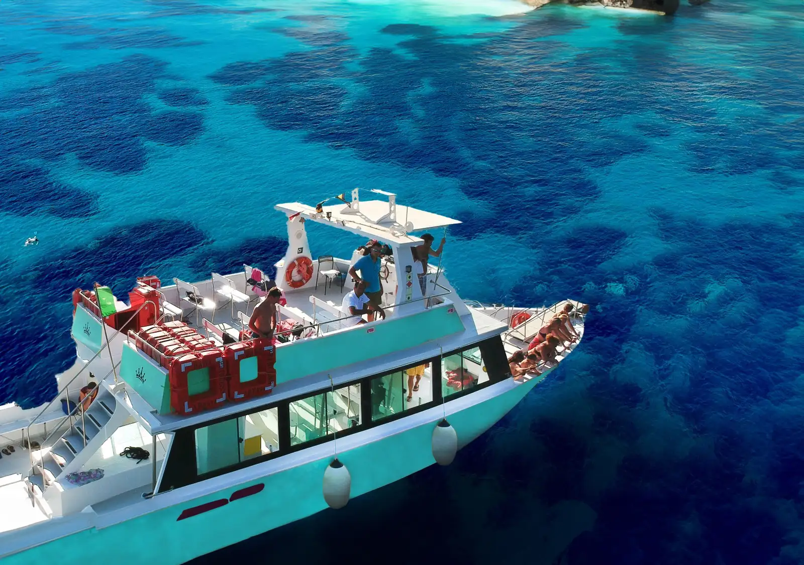
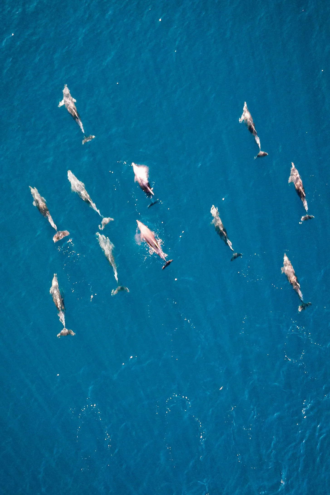

La tua sorpresa
Un giorno tra
il blu dell'Elba
Un viaggio in motonave alla scoperta delle acque, delle grotte e dei luoghi più affascinanti dell'Isola d'Elba.
Il regalo
Una giornata di mare, tutta da vivere
Ti aspetta un tour in motonave lungo la costa sud-occidentale dell'Isola d'Elba: si salpa, ci si lascia il porto alle spalle e si va dove l'acqua diventa trasparente.
- Si parte da Marina di Campo
- Durata Circa 5 ore
- Per chi Adatta a tutti
- Durante il viaggio Soste per il bagno e snorkeling
La rotta
Tappa dopo tappa
Il percorso segue il mare e l'umore della giornata. Ecco i luoghi che, onda dopo onda, potrai incontrare.
-
01
Marina di Campo
Il punto di partenza. Si sale a bordo, si mollano gli ormeggi e comincia l'avventura.
-
02
Capo Sant'Andrea
Prima sosta nelle acque limpide: il momento perfetto per il primo tuffo e per osservare il fondale.
-
03
Relitto di Pomonte
Una nuotata sopra il mercantile affondato nel 1972: snorkeling su un pezzo di storia sommerso.
-
04
Campo Lo Feno
Si costeggia un tratto di scogliera dove l'acqua e il fondale giocano con la luce.
-
05
Grotta Azzurra
Una delle tappe più scenografiche: colori intensi e riflessi che sembrano dipinti.
-
06
Fetovaia o Patresi
Un'altra sosta bagno, scelta seguendo il mare e le condizioni migliori della giornata.
-
07
Sedia di Napoleone
Si passa davanti alla roccia da cui, si racconta, Napoleone guardava la Corsica lontana.
-
08
In cerca dei delfini
Durante il rientro si tengono gli occhi sull'orizzonte. Con un po' di fortuna, potrebbero apparire — ma è la natura a decidere, e l'incontro non è mai garantito.
Momenti
Quello che porterai a casa






In breve
Buono a sapersi
Poche cose da tenere a mente per goderti la giornata senza pensieri.
- Durata
- Circa 5 ore
- Partenza
- Marina di Campo
- Periodo
- Da maggio a ottobre
- Da portare
- Costume e abbigliamento da mare
- Soste
- Previste per fare il bagno
- Incluso
- Equipaggio e carburante
- Itinerario
- Può variare con il meteo-marino
- Consiglio
- Presentarsi con un po' di anticipo
A bordo trovi
- Area coperta con sedute
- Bar
- Servizi igienici
- Terrazza panoramica
Un ultimo pensiero
Buon compleanno!
Con affetto,
Tommaso e Zoe